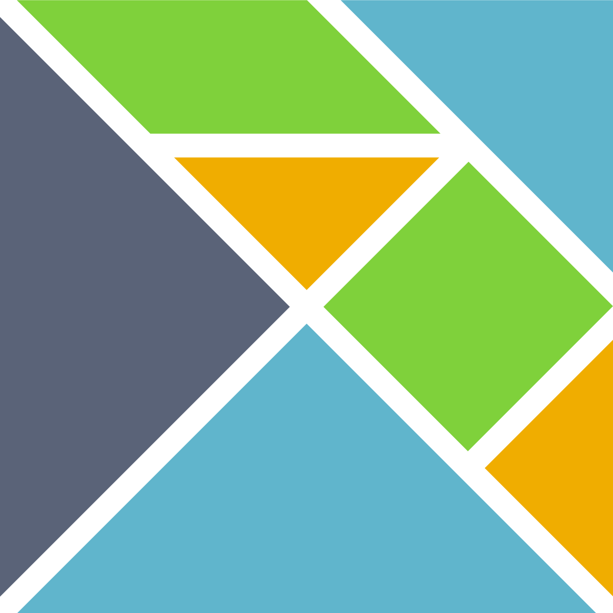

Elm
Desenvolvido utilizando a liguagem Elm no Frontend.
Haskell
Desenvolvido utilizando a liguagem Haskell no Backend.
Materialize
Desenvolvido utilizando o Framework Materialize
Desenvolvido utilizando a liguagem Elm no Frontend.
Desenvolvido utilizando a liguagem Haskell no Backend.
Desenvolvido utilizando o Framework Materialize